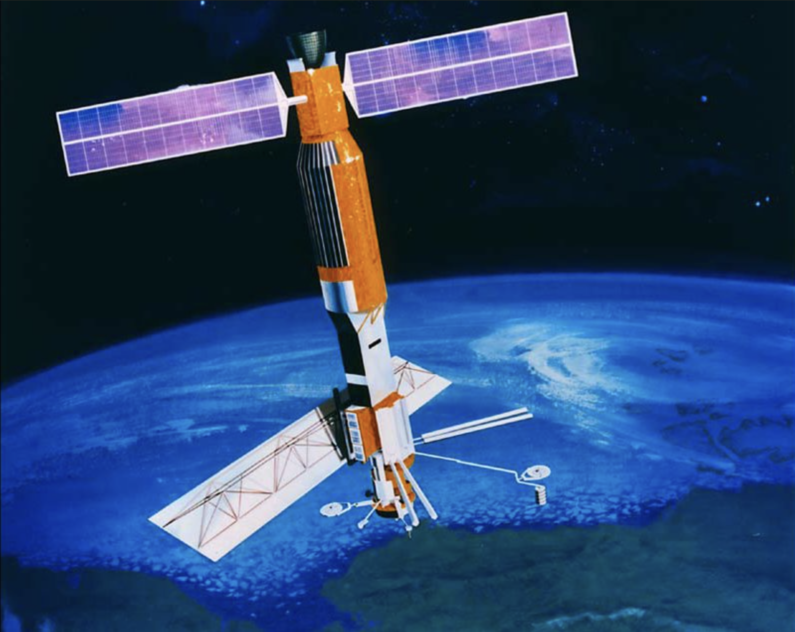

The History and Development of Satellite Oceanography
Satellite oceanography emerged from mid-20th-century advances in rocketry, radiometry, radar, and geodesy,
and it now provides essential, routinely available observations of the ocean surface and near-surface
environment. This chapter traces the intellectual and technological lineage from pre-satellite observation
strategies to modern multi-mission, multi-sensor Earth observing systems.
Scope note. “Satellite oceanography” is used here in the broad sense that is common in ocean remote sensing: measurement of ocean variables from orbit (directly or via retrieval algorithms), coupled
with the calibration, validation, and interpretation frameworks that make those measurements scientifically
usable.
From the Space Age to an ocean observing infrastructure
The modern practice of satellite oceanography is the outcome of a historical transition: early spaceflight proved that
measurements from orbit were possible, and subsequent decades transformed those demonstrations into an operational
ocean observing infrastructure—with repeatable orbits, well-calibrated sensors, sustained reference missions,
and data systems that routinely deliver analysis-ready fields (e.g., SST, SSH, winds, ocean color, sea ice, and
salinity). This section traces how the field evolved from first-generation imaging and radiometry to integrated,
multi-mission observing systems, and why that evolution matters scientifically: every “new capability” also brought
new retrieval algorithms, correction strategies, and uncertainty frameworks that underpin how we interpret ocean
variability from space today.
Learning objectives
What you should be able to do after completing this chapter
Describe the historical context and motivations for satellite oceanography
Identify key early missions and their contributions to ocean remote sensing
Summarize decade-by-decade developments in satellite oceanography from the 1960s to the present
Explain how modern satellite oceanography builds on earlier technological and scientific advances
What satellite oceanography measures, and why it matters
Satellite oceanography is the observation of the ocean (and its interaction with the atmosphere and cryosphere) using sensors carried by Earth-orbiting platforms. In practice, satellites measure radiance, backscatter, or propagation time at the top of the atmosphere, and ocean variables are obtained by combining those measurements with geophysical models, calibration information, and retrieval algorithms.
1.1.1 What is remote sensing in oceanography?
Remote sensing is the acquisition of information about a target without physical contact. For oceanography, most satellite measurements are inherently surface-weighted because seawater strongly attenuates electromagnetic radiation. Important exceptions include ocean color (which is sensitive to optical properties within the upper ocean) and active microwave methods (which respond to surface roughness and enable all-weather sampling in many conditions).
Measurement principle. Different ocean properties imprint distinct signatures on electromagnetic observations. For example, sea surface height is calculated from radar range measurements combined with precise orbit determination; surface winds are retrieved from the dependence of microwave backscatter on wind-generated surface roughness; and chlorophyll-a is estimated from the spectral dependence of water-leaving radiance after atmospheric correction.
1.1.2 Why observe the oceans from space?
The global ocean’s extent and dynamical variability impose practical limits on ship-based sampling. Satellites complement in-situ observing systems by providing repeated, standardized, spatially extensive measurements that enable the study of phenomena ranging from basin-scale circulation patterns to mesoscale and submesoscale eddies and coastal fronts. In addition, satellite missions support operational needs in weather, climate monitoring, and marine services by delivering consistent data streams with defined revisit schedules.
1.2 The Pre-Satellite Era: Foundations of Ocean Observation
From expeditions to systematic, but sparse, sampling
Before the Space Age, oceanography relied almost entirely on in-situ measurements from ships, moorings,
and later autonomous platforms. This era established many of the conceptual and methodological foundations of
modern ocean science: standardized hydrographic sampling, the recognition of coherent water masses, the role of
wind forcing, and the dynamical significance of fronts, eddies, and boundary currents.
1.2.1 Observational strengths and limitations
Classical ship-based programs deliver high-accuracy profiles and water samples, but their sampling is often
temporally and spatially sparse relative to the characteristic scales of ocean variability. As a consequence,
early oceanography faced persistent challenges:
Aliasing and temporal compositing: synoptic “snapshots” were difficult to obtain when a survey required weeks to months.
Limited access: persistent coverage of remote and high-latitude regions was constrained by logistics and weather.
Surface emphasis in practice: although deep observations were possible, their cost limited repeat sampling and large-area mapping.
Motivating idea. The emerging need for global coverage and repeat sampling—especially for
mesoscale and climate-scale variability—created an explicit demand for a fundamentally different observing
strategy, which the Space Age would provide.
1.3 The Space Age Begins
Early satellites and the transition to Earth observation
1.3.1 Sputnik-1 and Explorer-1: proof of orbit, proof of discovery
The launch of Sputnik-1 by the Soviet Union on 4 October 1957 is widely treated
as the start of the Space Age. Although Sputnik-1 carried only a radio transmitter, it established the
feasibility of routine orbital operations and catalyzed rapid investment in space-based science and
technology.
The United States responded with Explorer-1, launched on 31 January 1958. Data
from Explorer-1’s Geiger counter experiment led to the identification of intense radiation regions now known
as the Van Allen radiation belts, illustrating a recurring theme in satellite history:
space-based platforms not only operationalize measurement, but can reveal previously unknown components of the
Earth system.
Sputnik-1 (1957). Often cited as the start of the Space Age.
Credit: NASA. Source: NASA History archive.
Explorer-1 (1958). Early U.S. science satellite; associated with discovery of the Van Allen belts. The image showed Explorer-1 on top of a Jupiter-C rocket.
Credit: NASA.
1.3.2 TIROS-1 and the operational value of Earth imaging
The transition from “space exploration” to systematic Earth observation accelerated with
TIROS-1, launched on 1 April 1960 as the first successful weather satellite.
While TIROS was designed for meteorology, its imaging capability established a template for observing the
coupled ocean–atmosphere system: storms, frontal cloud bands, and marine stratocumulus patterns provide
indirect—but often oceanographically informative—evidence of underlying ocean states and air–sea interaction.
TIROS-1 (1960). First successful weather satellite; established routine Earth imaging from orbit.
Credit: NASA.
Early programs such as NASA’s Applications Technology Satellites (ATS) demonstrated the value
of near-continuous viewing geometries (geosynchronous or near-geosynchronous) for weather systems, while the
Nimbus research satellites provided a platform for testing sensors that later became central to
operational Earth system monitoring.
Of particular relevance to oceanography, Nimbus-5 carried the Electrically Scanning
Microwave Radiometer (ESMR), enabling early spaceborne microwave observations of the cryosphere and
demonstrating that microwave methods could provide critical information in cloudy or polar-night conditions.
1.4 Decade-by-Decade Development
From experimental sensors to integrated observing systems
Interpretive lens. The history of satellite oceanography can be read as a sequence of
measurement “expansions”: from visible imaging (clouds and the surface), to infrared SST, to microwave
all-weather observations, to precision altimetry and ocean color, and finally to multi-sensor constellations
and wide-swath mapping.
Timeline highlights
Selected missions and contributions
1960s Inception
The 1960s initiated satellite-based Earth observation with meteorological missions providing the first incidental ocean views. TIROS-1 (1960) delivered orbital cloud imagery, revealing marine storm systems and fronts tied to ocean-atmosphere interactions. Later TIROS and Nimbus-1 (1964) advanced infrared radiometry, enabling initial sea surface temperature (SST) estimates in the late 1960s using cloud-cleared channels, though limited by atmospheric effects and ~10–50 km resolution. These observations indirectly captured ocean features like upwelling and currents, while early workshops identified marine remote sensing potential, laying groundwork for dedicated oceanographic satellites in the 1970s.
1970s Beginning of dedicated ocean sensing
The 1970s launched dedicated satellite oceanography with proof-of-concept missions validating microwave techniques. GEOS-3 (1975) supplied the first extended radar altimeter data (1975–1978), mapping sea surface height anomalies, marine geoid, gravity fields, and mesoscale features. Seasat (1978), NASA's pioneering ocean satellite, operated 105 days but produced the first global synoptic views of sea surface height, significant wave height, vector winds, wave spectra, and sea ice using altimeter, scatterometer, SAR, and radiometer. These data revealed eddies, currents, and air-sea interactions, proving all-weather monitoring feasibility and catalyzing sustained altimetry, scatterometry, and SAR programs.
1980s Operational SST and mesoscale variability
The 1980s transitioned to sustained multi-year observations. CZCS on Nimbus-7 (until 1986) delivered the first extended global ocean color dataset for chlorophyll and phytoplankton productivity. Geosat (1985) provided long-duration altimetry for sea surface height, eddies, and geoid (later declassified). AVHRR on NOAA satellites (e.g., NOAA-7 1981, NOAA-11 1988) established continuous global SST records, supporting El Niño research. Japan's MOS-1 (1987) contributed ocean color and thermal data. These consolidated satellite utility for climate variability but revealed continuity gaps, motivating the advanced missions of the 1990s.
1990s Precision altimetry era
The 1990s established sustained global ocean monitoring. ERS-1 (1991) and ERS-2 (1995) introduced scatterometry for winds and altimetry. TOPEX/Poseidon (1992) achieved ~2 cm sea surface height accuracy, mapping circulation, tides, El Niño, and sea level trends. NSCAT (1996) and QuikSCAT (1999) supplied high-resolution ocean vector winds. SeaWiFS (1997) revived ocean color for chlorophyll and marine productivity. International datasets enabled near-continuous multi-parameter records, advancing climate understanding, operational forecasting, and the golden age of satellite oceanography.
2000s Multi-parameter Earth observing systems
The 2000s enhanced multi-sensor precision for climate and ecosystems. Jason-1 (2001) continued high-accuracy altimetry. Aqua (2002) with MODIS delivered ocean color and SST. ENVISAT (2002) provided MERIS color, AATSR SST, and altimetry. GRACE (2002) tracked ocean mass changes and sea level contributions. OceanSat-2 (2009) added color and winds. Dual orbits improved diurnal sampling and long-term records, advancing sea level attribution, circulation modeling, and biological monitoring while transitioning toward operational continuity.
2010s–2020 Constellations and wide-swath mapping
The 2010s emphasized continuity and new parameters, featuring ESA's Earth Explorer and Copernicus series. SMOS (ESA, 2009) pioneered global ocean salinity via L-band interferometry. CryoSat-2 (ESA, 2010) measured sea ice thickness and polar ocean dynamics. Jason-2 (2008) and Jason-3 (2016) sustained altimetry for sea level/climate. Sentinel-3 (ESA/Copernicus, 2016+) offered altimetry, ocean color, and SST. Aquarius (2011) and SMAP (2015) refined salinity. SWOT planning targeted wide-swath height. Higher resolutions and constellations supported marine heatwaves, biodiversity, and forecasting.
2020s–present Advanced capabilities and integration
The 2020s prioritize resolution, new variables, and climate resilience with ESA leadership. Sentinel-6 Michael Freilich (ESA/NASA, 2020) extends precise altimetry for sea level continuity. SWOT (2022, NASA/CNES) enables wide-swath sea surface height for submesoscale dynamics (ESA collaboration). Sentinel-3 series continues altimetry/color/SST. Advanced color missions (e.g., PACE 2024) target plankton/aerosols; ESA's SMOS and CryoSat extend salinity/ice data. Multi-mission synergies drive accurate sea level attribution, extreme event monitoring, ecosystem studies, and Copernicus operational services amid accelerating climate change.
1.4.1 The 1970s: “True” satellite oceanography
(Seasat and CZCS)
Two 1978 missions are commonly treated as foundational for modern satellite oceanography. First,
Seasat (launched 27 June 1978) carried a radar altimeter, synthetic aperture
radar (SAR), a scatterometer, and microwave radiometry, demonstrating that microwave techniques could retrieve
ocean information in many cloudy conditions. Seasat operated for roughly 105 days, yet produced
a dataset that shaped radar oceanography for decades.

Seasat (1978). First satellite designed specifically for comprehensive ocean remote sensing.
Credit: NASA/JPL-Caltech.
Seasat SAR example (1978): internal wave signatures visible as alternating roughness bands.
Credit: NASA Earth Observatory / Seasat SAR archive.
Second, Nimbus-7 carried the Coastal Zone Color Scanner (CZCS), the first
satellite sensor designed specifically to observe ocean color for chlorophyll and related bio-optical
properties. Although intended as a proof-of-concept, CZCS established the scientific and algorithmic
foundations for global biological oceanography from space.
CZCS ocean color examples: early demonstrations of large-scale, satellite-derived bio-optical structure.
Credit: NASA Earthdata / CZCS instrument archive.
1.4.2 The 1980s Increase reliability
Operationalization, calibration discipline, and the bridge to precision oceanography
The 1980s are often best understood as the “operationalization decade” for satellite oceanography: the period when
several measurement concepts demonstrated in the 1970s were translated into repeatable, routinely processed data
streams with increasing attention to calibration stability, algorithm maturity, and sustained archiving. While the
decade did not produce a single “Seasat-like” step change across all variables, it delivered something arguably more
important for modern ocean remote sensing—an emerging expectation that satellite observations should support
multi-year records, objective mapping, and quantitative comparison to in-situ measurements and numerical models.
Decadal theme. The 1980s shifted the field from “Can we measure this from space?” to “Can we measure
it reliably enough to build a record?” That shift elevated three priorities: (i) calibration/validation practice,
(ii) repeatable geophysical retrieval algorithms, and (iii) mission continuity planning.
Operational infrared SST: AVHRR and the rise of routine global mapping
Sea surface temperature (SST) became one of the first ocean variables to move toward quasi-operational satellite
monitoring in the 1980s through NOAA’s polar-orbiting platforms carrying the Advanced Very High Resolution
Radiometer (AVHRR). AVHRR’s thermal infrared channels enabled high-frequency SST estimation at
moderate spatial resolution, well suited for resolving fronts, coastal upwelling signatures, and mesoscale features
when cloud cover permitted. The decade also saw rapid refinement of “split-window” and multi-channel SST approaches
to correct for atmospheric absorption, along with growing use of in-situ matchups (buoys, ships) to quantify bias,
drift, and regional performance.
Passive microwave radiometry: all-weather sea ice and wind speed foundations
In parallel, passive microwave radiometry matured into a practical ocean–cryosphere observing capability. Sensors
such as SMMR Scanning Multichannel Microwave Radiometer (on Nimbus-7, continuing into the early 1980s) and later the SSM/I Special Sensor Microwave/Imager
series (on DMSP platforms beginning in the late 1980s) established the power of microwave observations for mapping
sea ice concentration, polar conditions, and related surface/atmospheric variables in cloudy regions and during
polar night. Compared with infrared and visible methods, passive microwave retrievals typically trade spatial detail
for sampling robustness—an exchange that became central to designing multi-sensor observing strategies.
Altimetry continuity: GEOSAT and the push toward “precision” sea level
After Seasat’s short life, the 1980s continued radar altimetry through missions such as the U.S. Navy’s
GEOSAT (launched mid-decade), extending sea surface height and wave-related observations and
reinforcing how strongly scientific value depends on orbit knowledge and geophysical corrections. This period
coincided with major improvements in orbit determination methods, tracking systems, and gravity field knowledge,
laying technical groundwork for the “precision altimetry era” that would fully mature with TOPEX/Poseidon in the
early 1990s. Scientifically, 1980s altimetry helped solidify the view that mesoscale variability is ubiquitous and
dynamically central at basin scale.
Radar winds and imaging: consolidating algorithms and building the mission pipeline
Active microwave oceanography (scatterometry and SAR) experienced a transitional phase in the 1980s. With Seasat’s
scatterometer and SAR serving as proof-of-concept, much of the decade’s progress occurred through algorithm
development, airborne campaigns, and mission formulation that culminated in early-1990s launches (e.g., European
multi-instrument platforms and later dedicated scatterometers). In practical terms, this is when the community
became more explicit about the full measurement chain—instrument design, geophysical model functions (GMFs),
calibration strategy, and validation datasets—required to retrieve winds and interpret radar signatures of surface
roughness modulated by currents, internal waves, and surface films.
Ocean color: end of CZCS and the planning of next-generation optical missions
Ocean color provides a useful “historical counterpoint” for the 1980s. CZCS (flown on Nimbus-7)
continued to demonstrate scientific value into the early-to-mid 1980s, but the end of its operations created a
recognized gap in continuous biological ocean observation from space. That gap, and the lessons learned about
atmospheric correction and calibration stability, directly shaped later mission concepts and programmatic emphasis
on long-term, well-characterized radiometry—setting the stage for SeaWiFS and, later, EOS-era instruments such as
MODIS (Moderate Resolution Imaging Spectroradiometer).
Key 1980s development threads
What changed in practice
SST Infrared operationalization
AVHRR-era workflows pushed SST toward routine mapping, with growing emphasis on atmospheric correction,
cloud screening, and matchup-based bias assessment.
Microwave All-weather coverage
Passive microwave time series (SMMR → SSM/I) demonstrated robust polar and cloudy-region observing capability,
supporting sea ice monitoring and related surface retrievals.
Altimetry Continuity + geodesy
GEOSAT and contemporaneous tracking advances reinforced that precise orbit determination and geophysical
corrections are central to SSH science value.
Radar Retrieval “chains” mature
Scatterometer and SAR methods increasingly formalized the end-to-end chain from backscatter to winds and
surface interpretation (GMFs, calibration, validation).
Ocean color Lessons from a gap
The post-CZCS gap made continuity planning explicit and raised the bar for calibration stability and
atmospheric correction in future optical missions.
Systems Data stewardship emerges
The decade strengthened expectations for consistent processing, archiving, and later reprocessing—turning
satellite datasets into scientific records rather than one-off experiments. NASA's Pilot Ocean Data System (PODS) established in 1984, then evolved to NODS (NASA Ocean Data System) in 1987, and later to PO.DAAC (Physical Oceanography Distributed Active Archive Center) in 1992.
Representative 1980s-era missions/sensors and their oceanographic roles
Extended altimetry after Seasat and highlighted how orbit determination, gravity field knowledge, and
corrections control scientific utility—directly informing “precision altimetry” mission design.
CZCS legacy and post-CZCS planning (mid-to-late 1980s)
Ocean color (heritage), chlorophyll algorithms and atmospheric correction
The end of CZCS operations created a visible continuity gap, sharpening requirements for next-generation
ocean color calibration stability and sustained data records.
Bridge to the 1990s. Many “headline” missions of the early 1990s were enabled by work done in the
1980s: instrument engineering, orbit/track design, geophysical correction models, and calibration/validation
culture. This is why the 1980s are best viewed less as a single-mission revolution and more as the decade that
professionalized satellite oceanography into an observing infrastructure.
1.4.3 The 1990s Beginning of precision altimetry climate record
Precision altimetry, revived ocean color, and operational-quality winds
The 1990s marked a decisive transition in satellite oceanography: the field moved from “capability demonstration”
toward climate-relevant, quantitative observing supported by improved calibration practice, better orbit
determination, maturing geophysical corrections, and increasingly standardized data systems. Several mission lines
converged—precision radar altimetry, scatterometry, ocean color radiometry, and routine SAR imaging—creating the
multi-sensor foundation that underpins modern ocean observing and data assimilation.
Decadal theme. In the 1990s, success was increasingly defined not by a single striking image or
short proof-of-concept, but by stability, cross-mission consistency, and scientific traceability:
calibration/validation strategies, uncertainty characterization, and reprocessing became part of the observing
system rather than “afterthoughts.”
Precision altimetry becomes a climate observing system
The strongest single step-change of the decade came from TOPEX/Poseidon, which established the
precision altimetry paradigm for observing sea surface height (SSH) variability at basin scale and for building
an internally consistent global record. This era also benefited from parallel altimeter missions (notably ESA’s
ERS series, the U.S. Navy’s GEOSAT Follow-On, and of course SeaSat ), which strengthened continuity and helped build
multi-mission perspectives on ocean topography. The 1990s altimetry story is therefore both scientific and
infrastructural: better orbit knowledge and geophysical corrections translated directly into more reliable SSH
fields for circulation, variability, and sea level research.
Vector winds from space: scatterometry moves into mainstream use
Satellite-derived ocean surface vector winds became substantially more usable—and more widely used—in the 1990s.
ESA’s ERS missions provided sustained active microwave observing with instruments that supported both imaging
(SAR) and wind retrieval (scatterometry), reinforcing that all-weather capability is essential for routine wind
products. The decade also saw the NASA Scatterometer (NSCAT) on ADEOS/Midori and the rapid
transition to QuikSCAT/SeaWinds at the end of the decade, reflecting a clear operational need:
consistent global wind vectors for air–sea flux estimation, storm analysis, and numerical weather and ocean model
applications.
Ocean color returns: SeaWiFS (and the pathway to EOS-era radiometry)
Following the end of the CZCS era, the 1990s restored global biological satellite oceanography through
SeaWiFS, which re-established a stable ocean color record suitable for basin-to-global analysis of
chlorophyll and related bio-optical variability. In addition, the decade included important bridging instruments
such as OCTS (on ADEOS/Midori), which combined ocean color and temperature objectives and helped
mature calibration/processing approaches for multi-band radiometry. By the end of the decade, NASA’s EOS program
reached orbit with Terra (1999), carrying MODIS—an explicit signal that long-term, multi-disciplinary
Earth system radiometry would be a central pillar of the next era of ocean remote sensing.
Radar imaging becomes routine: SAR, sea ice, and coastal process applications
The 1990s also expanded the practical use of synthetic aperture radar (SAR) for oceanography and
cryosphere–ocean interactions. ESA’s ERS SAR data (and successor missions) supported a growing community working on
sea ice, oil slick detection, coastal morphology, and ocean surface roughness signatures associated with winds,
waves, internal waves, and current shear. Complementary SAR missions—such as JERS-1 and
RADARSAT-1—reinforced the value of all-weather, day–night imaging for high-latitude and coastal
environments, where optical methods can be persistently limited by clouds and illumination.
SST accuracy and inter-sensor consistency: ATSR and the “climate SST” mindset
While AVHRR continued to provide high-frequency infrared SST mapping, the 1990s strengthened the emphasis on
accuracy and stability through the Along-Track Scanning Radiometer (ATSR) family on ERS
platforms. ATSR was designed specifically to improve SST accuracy for environmental and climate applications, and
ATSR-2 on ERS-2 extended that capability mid-decade. This “climate SST” mindset—instrument design
tied to calibration strategy, atmospheric correction, and long-term consistency—foreshadowed the EOS-era approach
to ocean radiometry and reprocessing-driven record improvement.
Key 1990s development threads
What changed in practice
Altimetry Precision + continuity
TOPEX/Poseidon set a new accuracy standard for SSH, while ERS altimeters and GEOSAT Follow-On strengthened
continuity and multi-mission perspectives on ocean topography.
Winds Scatterometry operationalizes
ERS scatterometry established sustained coverage; NSCAT and QuikSCAT accelerated adoption of global vector winds
for fluxes, storms, and model forcing/assimilation.
Ocean color Global biology returns
SeaWiFS rebuilt a stable ocean color record after the CZCS gap; OCTS and EOS planning helped mature calibration,
processing, and multi-band radiometry practice.
SAR All-weather coastal & polar imaging
ERS, JERS-1, and RADARSAT-1 expanded routine SAR use for sea ice monitoring, slick detection, and surface
roughness signatures linked to winds, waves, and currents.
SST Accuracy mindset grows
ATSR/ATSR-2 emphasized stable, accurate SST for climate and environmental applications, complementing AVHRR’s
high-frequency mapping strengths.
Infrastructure Records, not snapshots
Standardized processing, archiving, and reprocessing culture became central—turning satellite observations into
traceable scientific records suitable for multi-decadal analysis.
Representative 1990s-era missions/sensors and their oceanographic roles
Established precision altimetry as a climate-scale observing method and anchored the concept of a stable
reference record for ocean circulation and sea level science.
ERS-1 (1991) / ERS-2 (1995)
SAR imaging, vector winds (scatterometer), altimetry, SST (ATSR family)
Demonstrated sustained, multi-instrument microwave observing for ocean/ice/coastal applications and helped
institutionalize routine, all-weather measurement strategies.
NSCAT (1996) → QuikSCAT/SeaWinds (1999)
Ocean surface vector winds
Accelerated community reliance on scatterometer winds for air–sea interaction studies, storm analysis, and
model forcing; QuikSCAT explicitly filled a continuity gap after NSCAT.
SeaWiFS (1997)
Ocean color (chlorophyll and related bio-optical fields)
Restored a global ocean color data stream after the CZCS-era gap and strengthened calibration/processing
workflows that supported long-term biological oceanography from space.
ADEOS/Midori OCTS (1996)
Ocean color + SST (multi-band optical/IR radiometry)
Provided an important bridge in multi-band ocean radiometry, informing later approaches to calibration,
processing, and multi-variable product development.
RADARSAT-1 (1995) and JERS-1 (1992)
SAR imagery (sea ice, coastal processes, surface roughness signatures)
Expanded the SAR archive and diversified observing geometries/bands used for ocean and cryosphere studies,
reinforcing SAR as a core all-weather tool for oceanography.
GEOSAT Follow-On (1998)
Ocean topography (altimetry)
Extended the altimetry lineage and supported continuity for applications requiring frequent, repeat-track
ocean topography information.
Terra / EOS AM-1 (1999, EOS transition)
EOS-era radiometry (e.g., MODIS ocean color and SST in the next decade)
Signaled the shift toward integrated Earth system observing with long-term, multi-disciplinary sensor suites
and robust data system support.
Bridge to the 2000s. By the end of the 1990s, satellite oceanography had key ingredients of a modern
observing system in place: a precision altimetry reference mission line, global scatterometer winds, revived ocean
color radiometry, routine SAR imaging, and an EOS program designed for sustained, multi-variable Earth system
monitoring—setting up the rapid expansion of multi-mission synthesis and operational product suites in the 2000s.
Satellite Oceanography Sensor and Mission Development (2000–2010)
EOS-era multi-sensor radiometry, reference altimetry continuity, and first dedicated salinity missions
The 2000–2010 decade marks a shift from primarily experimental satellite oceanography toward a durable
observing infrastructure: multi-instrument platforms, deliberate mission succession for climate-quality
time series, and institutional data systems capable of routine processing, reprocessing, and distribution.
During this period, “heritage-to-continuity” thinking became explicit—design choices increasingly emphasized
calibration stability, cross-mission overlap, and standardized geophysical products for ocean monitoring.
Decadal theme. The defining technical advance was not a single sensor type, but the emergence of
repeatable, cross-calibrated measurement lines (SST, ocean color, winds, SSH) that supported sustained
climate records and operational use, rather than mission-by-mission snapshots.
EOS radiometry becomes a workhorse for SST and ocean color (Terra/Aqua era)
NASA’s Earth Observing System (EOS) anchored the decade with stable, well-calibrated multi-spectral radiometry.
Instruments such as MODIS supported routine global products for sea surface temperature (infrared) and ocean
color (visible/near-IR), alongside atmospheric properties needed for aerosol correction and quality screening.
Complementary passive-microwave radiometry (e.g., AMSR-E on Aqua) strengthened all-weather capability for
variables relevant to oceanography, including SST under clouds (with coarser resolution), surface winds, and sea ice.
Radiometric discipline: long-term calibration/characterization became a first-order mission requirement for climate applications.
Multi-sensor synergy: IR + microwave combinations mitigated cloud limitations and strengthened coastal-to-basin-scale products.
Reference altimetry continuity (Jason series) and the maturation of sea level records
Precision radar altimetry advanced through deliberate mission succession, enabling a continuous, cross-mission
record of sea surface height variability used to quantify mesoscale circulation, basin-scale variability,
and global mean sea level change. The early-2000s transition to follow-on reference missions emphasized stable
orbit determination, consistent geophysical corrections, and overlap strategies that allow time-series splicing
without introducing artificial trends.
European multi-instrument platforms: Envisat and the “multi-parameter” approach
ESA’s Envisat exemplified an integrated payload philosophy: ocean color, SST-capable radiometry, radar altimetry,
and radar imaging were brought together on a single platform. This multi-instrument configuration supported
cross-variable interpretation (e.g., relating winds and waves to surface roughness, or linking optical signals
to physical context) while also reinforcing continuity from earlier European remote sensing lines.
Operational scatterometry expands: routine vector winds for marine and climate applications
In the mid-2000s, operational C-band scatterometry strengthened global wind observing through systems such as
MetOp/ASCAT. Reliable wind vectors supported both applied marine services and scientific analysis, and they
became a routine assimilation input for weather–ocean coupled forecasting and reanalysis.
From sea level “height” to sea level “budget”: gravimetry enters mainstream ocean monitoring
Although not an ocean-surface imager, satellite gravimetry (GRACE) transformed the sea level budget problem by
enabling large-scale estimates of time-varying ocean mass. Together with altimetry and in-situ hydrography,
gravimetry helped formalize the decomposition of sea level into mass and steric components—an important step
for closing global and regional budgets.
Sea surface salinity becomes a satellite variable (SMOS)
The late-2000s also established the feasibility of satellite sea surface salinity via L-band radiometry.
This was a conceptual expansion of satellite oceanography: from temperature, color, winds, and SSH toward
direct constraints on the ocean freshwater cycle and upper-ocean density forcing. SMOS served as a key milestone
by demonstrating global salinity retrieval at climate scales.
Representative missions and sensors
Selected examples (not exhaustive)
Representative satellite missions shaping ocean remote sensing in 2000–2010
Mission (launch)
Key sensor class
Primary ocean variables
Development significance
Terra (1999; MODIS operations from 2000)
Multi-spectral VIS/IR radiometry
Ocean color; IR SST
EOS-era calibration discipline and sustained global products
European multi-parameter ocean observing on a single platform
MetOp-A (2006)
Scatterometry (ASCAT)
Vector winds (and related air–sea forcing fields)
Operational wind continuity and routine assimilation pathways
SMOS (2009)
L-band passive microwave radiometry
Sea surface salinity (SSS)
Established salinity as a practical satellite geophysical target
GRACE (2002)
Satellite gravimetry
Ocean mass change (sea level budget component)
Enabled mass/steric decomposition and improved sea level budget closure
Bridge to the 2010s. By 2010, the core “pillars” of satellite oceanography—SST, ocean color, winds,
and SSH—were supported by continuity-oriented mission planning, and salinity had emerged as the next frontier.
The 2010s then accelerated the transition from missions to constellations and services.
2010–2020, Salinity mission maturity
Constellations, salinity maturity, Copernicus operations, and next-generation reference altimetry
The 2010–2020 decade is characterized by the operationalization of satellite oceanography through
constellations (particularly Copernicus Sentinels and U.S. operational polar systems), expanded
open-data distribution, and strengthened continuity planning for long climate records.
Scientifically, the decade consolidated the core ocean variables (SST, winds, SSH, ocean color) while also
maturing satellite sea surface salinity into a multi-mission observing capability.
Decadal theme. Satellite oceanography increasingly behaved like a service:
continuity, latency, and cross-mission consistency became as important as single-mission innovation.
Sea surface salinity maturity: from single-mission demonstrations to a multi-mission capability
Building on SMOS (launched in 2009), the 2010s established a practical, multi-mission satellite salinity
capability. Aquarius/SAC-D was designed with the primary objective of sea surface salinity observation, and
SMAP extended L-band radiometry into the operational era with widely distributed data products. Together,
these missions strengthened constraints on the ocean freshwater cycle and upper-ocean density forcing at
basin-to-global scales.
Measurement class: L-band passive microwave radiometry (with geophysical corrections for surface roughness and temperature effects).
Scientific contribution: new observing constraints on surface freshwater patterns and variability that are difficult to sample in situ at global scales.
Copernicus constellation: routine SAR, ocean color, SST, and operational altimetry
The Copernicus Sentinel missions transformed access and revisit for ocean-relevant observations. Sentinel-1
provided C-band SAR imagery day/night and in most weather, supporting sea ice, surface roughness mapping, and
marine monitoring. Sentinel-3 combined dedicated ocean color (OLCI), SST radiometry (SLSTR), and radar altimetry
capabilities to support multi-parameter ocean products with operational continuity.
Radiometry continuity beyond MODIS: VIIRS and next-generation operational polar orbiters
As MODIS instruments aged, VIIRS became the central “moderate-resolution” imaging radiometer for sustained,
operational global coverage. VIIRS on Suomi NPP and NOAA-20 maintained continuity for a broad suite of land,
atmosphere, cryosphere, and ocean products—supporting SST, ocean color–related applications, and hazards
monitoring—while enabling overlap for cross-calibration and continuity assessments.
Reference altimetry continuity: Jason-3 and the Sentinel-6 era
Precision sea level observing continued through the Jason series, culminating in a transition to
Copernicus Sentinel-6 as the next radar altimetry reference mission. This continuity is central to detecting
long-term sea level change while also supporting routine mapping of ocean variability.
Operational wind continuity: MetOp follow-ons and sustained scatterometry
Scatterometer winds remained a foundational air–sea forcing dataset. Follow-on MetOp spacecraft maintained the
operational wind record through the decade, reinforcing continuity for both marine services and climate analysis.
Representative missions and sensors
Selected examples (not exhaustive)
Representative satellite missions shaping ocean remote sensing in 2010–2020
Mission (launch)
Key sensor class
Primary ocean variables
Development significance
Aquarius/SAC-D (2011)
L-band radiometry (salinity-focused mission)
Sea surface salinity (SSS)
First mission with primary goal of global SSS measurement
SMAP (2015)
L-band radiometry
Sea surface salinity (SSS) products; related surface fields
Operational-era salinity products and community reprocessing pipelines
Designed to continue the long sea level record into the 2020s
Course relevance. Many “standard” datasets used in modern physical and biogeochemical remote sensing
workflows—multi-mission SST, operational winds, reference altimetry, and operational ocean color—derive their
institutional structure (continuity planning, reprocessing strategy, latency tiers) from the mission evolution
of this decade.
1.4.5 The 2020s: High-resolution observing, continuity missions, and a new development pipeline
Wide-swath altimetry, hyperspectral/diurnal ocean color, renewed SAR capacity, and next-generation microwave
Satellite oceanography in the 2020s is defined by two parallel advances. First, agencies have doubled down on
climate-quality continuity (especially for sea level, SST, winds, and ocean color) by extending reference
missions and operational constellations. Second, the decade has introduced a “fine-scale frontier,” where new
sensor geometries and richer spectral sampling expand what can be resolved in the upper ocean and coastal zone.
The result is an observing system that is simultaneously more stable (for trends) and more capable (for dynamics),
while increasingly designed for multi-mission fusion rather than single-sensor interpretation.
2020s signature. The most important technical shift is moving from “tracks and snapshots” toward
surfaces and time series: wide-swath sea surface height mapping (instead of only nadir tracks), hyperspectral
ocean color (instead of a limited set of bands), and regional geostationary sampling that resolves diurnal change.
1.4.5.1 Selected missions in operation (2020–present)
Selected 2020s missions relevant to satellite oceanography (status context: January 2026)
Mission
Launch
Core sensor capability
Ocean variables and use
Why it matters in the 2020s
Sentinel-6 Michael Freilich (Sentinel-6A) (NASA/ESA/EUMETSAT/NOAA)
SST/ice/wind-relevant microwave and IR context products supporting operational ocean–atmosphere monitoring
Represents the meteorological backbone that many ocean products (and forcing fields) depend on.
1.4.5.2 Sensor-development trends emphasized in the 2020s
Two-dimensional sea surface height mapping: wide-swath interferometric altimetry expands the observable
SSH field beyond nadir tracks, improving access to coastal gradients and fine-scale variability.
More spectral information for ocean color: hyperspectral imagers and polarimeters aim to improve
atmospheric correction and enable more diagnostic bio-optical inference than traditional band-ratio chlorophyll alone.
Temporal densification: geostationary ocean color (and dense LEO constellations) address aliasing and
enable diurnal process studies in coastal seas.
“SAR returns to operations”: renewed C-band SAR continuity plus new L/S-band systems expands imaging
of sea ice, coastal hazards, and roughness structures used as proxies for winds/waves/currents.
All-weather microwave evolution: new radiometers (and next-generation polar systems) emphasize robust
observing in cloudy conditions and at high latitudes, where optical/IR products are often limited.
1.4.5.3 Missions in development and scheduled later in the 2020s
GEO coastal GLIMR (NASA, planned)
A geostationary, coastal-focused imaging mission concept designed to monitor littoral waters at high temporal
resolution—aimed at filling the “diurnal + coastal” gap left by polar-orbiting ocean color systems.
A polar-focused altimetry mission intended to improve sea-ice and snow/ice-sheet topography information, with direct
relevance to freshwater fluxes, polar processes, and sea-level attribution.
Microwave CIMR (Copernicus Expansion, planned)
A high-latitude imaging microwave radiometer concept aimed at improving all-weather observing of the polar oceans
and sea-ice environment (a key limitation area for optical/IR approaches).
SAR ROSE-L (Copernicus Expansion, planned)
An L-band SAR mission concept designed to extend radar capability; for oceanography it is most directly relevant
through sea-ice and coastal applications and synergy with other radar missions.
A formation-flying InSAR concept designed to fly with Sentinel-1 and enable new measurements of motion (including
ocean-surface currents and sea-ice drift), complementing conventional SAR imaging.
Operations JPSS follow-on (NOAA, planned)
Planned next launches in the JPSS series maintain operational continuity for global imaging radiometry and derived
ocean variables (SST and ocean color among them), supporting marine services and reanalysis/assimilation systems.
Operations Metop-SG “B” series (EUMETSAT/ESA, planned)
The companion satellites in the EPS-SG system include core sensors such as a scatterometer and microwave imager,
providing essential ocean-surface wind and all-weather context products used throughout satellite oceanography.
Scheduling note. “Planned” launch windows for expansion missions are programmatic and can shift with
procurement, launch-vehicle availability, and system-level risk management. For teaching materials, it is usually best
to cite the mission portals (below) and treat dates as targets rather than guarantees.
1.5 Modern Context: Satellites and In-Situ Systems
Complementarity, calibration/validation, and integration
1.5.1 The Argo observing system
Satellite oceanography evolved alongside transformative advances in autonomous in-situ observation. The
Argo program is a global network of profiling floats that repeatedly sample temperature and
salinity (and, for subsets of floats, biogeochemical variables). Argo emphasizes open data access and
standardized quality control, and it is explicitly synergistic with satellite altimetry (the “Jason” naming
reference is reflected in Argo program outreach materials).
As of program documentation describing the current observing system, Argo is collecting on the order of
13,000 profiles per month (roughly 400+ per day).
Argo float sampling cycle: repeated profiling and satellite telemetry enable global subsurface coverage
that complements surface-focused satellite remote sensing.
Source: Argo Program (UC San Diego).
1.5.2 Complementary roles and data fusion
Satellites and in-situ systems address different observational needs. Satellites provide broad, repeated,
surface-weighted views; in-situ systems provide vertical structure, direct sampling, and essential ground truth
for algorithm development and uncertainty estimation.
Complementary capabilities of satellite and in-situ ocean observing systems
Capability
Satellites
In-situ (e.g., Argo, moorings, ships)
Spatial coverage
Global or near-global; synoptic mapping
Sparse, distributed; concentrated along lines/arrays
Vertical structure
Primarily surface / near-surface sensitivity
Profiles and direct sampling through the water column
Temporal sampling
Orbit-determined revisit; from hours (geo) to days/weeks (LEO)
Continuous at fixed sites; repeat cycles for profilers
All-weather observations
Microwave: strong; optical/IR: limited by clouds and aerosols
Typically robust (subject to platform survivability)
Calibration/validation
Requires in-situ reference datasets and matchup analyses
Self-contained measurements but still require QC and standards
Best used for
Surface patterns, variability mapping, climate records
Process studies, vertical transport, water mass properties
Integration principle. Modern “ocean state” estimation typically relies on data fusion:
satellite observations constrain surface structure and variability, while in-situ observations constrain
vertical structure and provide calibration/validation. Data assimilation frameworks formalize this fusion by
merging observations with dynamical models.
1.6 Sensor Showcase: Observing Ocean Variables from Space
Illustrative examples from mission archives
Satellite oceanography is often organized by the measured (or retrieved) geophysical variables and their
associated sensor classes. The examples below emphasize historically important sensors and mission concepts,
using imagery from mission and agency archives.
SAR is an active microwave technique: the instrument transmits pulses and measures the amplitude and
phase of the backscattered signal. Over the ocean, SAR primarily responds to surface roughness at centimeter
scales, which is modulated by wind stress, waves, currents, internal waves, and surface films. Seasat SAR data
are historically important because they demonstrated high-resolution ocean imaging from orbit.
1.6.2 Ocean color: chlorophyll and bio-optical structure
Ocean color sensors estimate the spectral signature of water-leaving radiance after accounting for atmospheric
contributions. Early sensors such as CZCS established feasibility, and later missions such as SeaWiFS provided
improved global coverage and calibration stability.
SeaWiFS ocean color examples: Bering Sea ocean color image showing phytoplankton (coccolithophores) distribution.
1.6.3 Scatterometry: vector winds over the ocean
Radar scatterometers infer near-surface wind vectors from the directional dependence of microwave backscatter,
which is controlled by wind-generated short-wave roughness. The SeaWinds scatterometer on QuikSCAT provided
widely used global winds products and supported tropical cyclone and storm analyses.
Scatterometer wind example: QuikSCAT/SeaWinds depiction of wind speed and vectors around Hurricane Dora.
Credit: NASA/JPL-Caltech (Photojournal).
1.6.4 Radar altimetry: sea surface height (SSH) and its variability
Nadir radar altimeters measure the two-way travel time of a pulse to the sea surface; with precise orbit
knowledge, this yields sea surface height along the satellite ground track. SSH variability is a primary
observable for ocean dynamics because it reflects pressure gradients and geostrophic flow (after appropriate
dynamical interpretation).
1.6.5 Wide-swath altimetry: SWOT and the fine-scale frontier
SWOT’s KaRIn instrument extends altimetry from a one-dimensional along-track measurement to a two-dimensional
swath, enabling mapping of sea surface height structure across a wide corridor. The mission collects two
swaths (~50 km each) on either side of the nadir track, with a central gap sampled by the nadir altimeter,
for an overall width of ~120 km.
SWOT swath geometry: two interferometric swaths plus a nadir track.
Source: NASA SWOT mission resources.
SWOT data example: global map of sea surface height RMS from KaRIn measurements (illustrative product).
Credit: NASA/JPL-Caltech via NASA Earthdata feature article.
SWOT payload overview: KaRIn, nadir altimeter, microwave radiometer, and orbit/positioning subsystems.
Source: NASA SWOT mission resources.
1.7 Summary
Key takeaways
Satellite oceanography progressed from the political and technological milestones of early spaceflight to an
essential component of the modern Earth observing system. The field’s growth reflects a sequence of enabling
advances: Earth imaging (TIROS), sensor technology maturation (Nimbus), the transition to all-weather microwave
methods (Seasat and successors), global biological mapping (CZCS → SeaWiFS and beyond), and precision sea
surface height monitoring (TOPEX/Poseidon → reference missions such as Sentinel-6).
Contemporary oceanography increasingly depends on integration: satellites provide broad, surface-based
constraints on variability and climate signals, while in-situ systems such as Argo provide vertical structure
and calibration/validation. The newest generation of missions—exemplified by SWOT’s wide-swath interferometric
altimetry—expands the range of resolvable ocean processes and improves the observational basis for dynamics,
prediction, and climate attribution.
Practical implication for the course. Understanding this history clarifies why modern datasets
are structured the way they are (e.g., retrieval algorithms, corrections, validation strategy, and mission
continuity planning) and why multi-sensor thinking is central to interpreting the ocean from space.
Remeber, the existance of a mission depends on a -often small- group of people's vision and dedication. You can be one of them.
References and Figure Sources
Texts, mission resources, and instrument documentation for the “Introduction to Sensors” chapter
Core textbooks and monographs
Robinson, I. S. (2004). Measuring the Oceans from Space: The Principles and Methods of Satellite Oceanography.
Springer.
Martin, S. (2014). An Introduction to Ocean Remote Sensing (2nd ed.).
Cambridge University Press.
Image and figure use note: If you embed figures directly from agency/mission archives, follow each source site’s
stated image policy and attribution requirements.